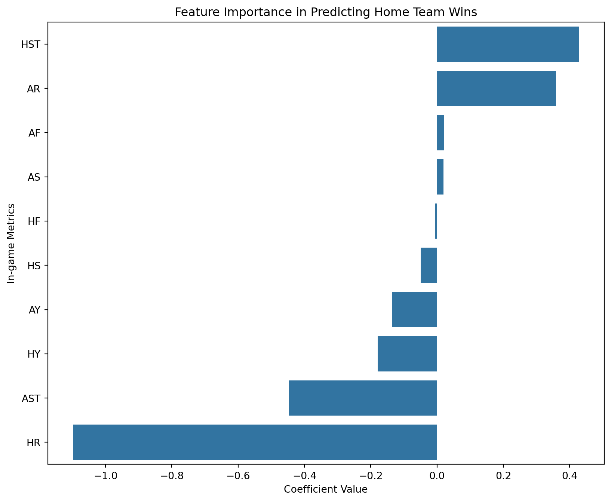
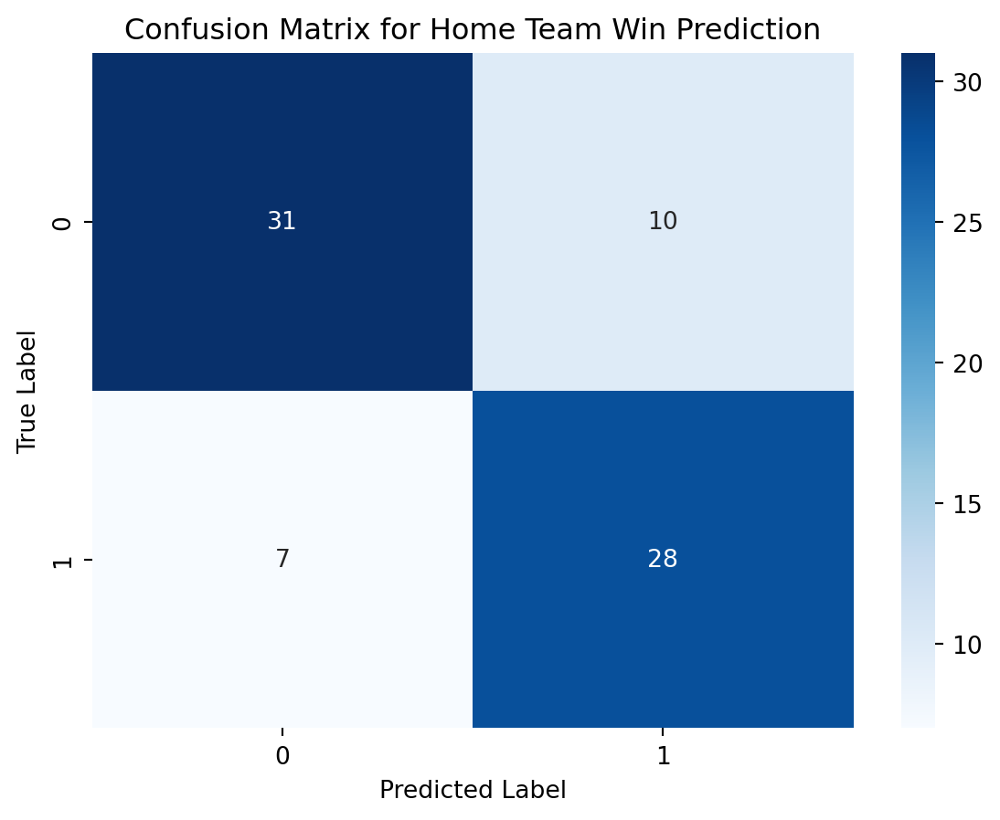

import pandas as pd
import matplotlib.pyplot as plt
import seaborn as sns
from sklearn.model_selection import train_test_split
from sklearn.linear_model import LogisticRegression
from sklearn.metrics import confusion_matrix, accuracy_score
# Load the dataset
df = pd.read_csv('data/soccer21-22.csv')
# Creating a binary target variable 'Result' where 1 represents a home win ('H') and 0 otherwise
df['Result'] = (df['FTR'] == 'H').astype(int)
# Feature selection
features = ['HS', 'AS', 'HST', 'AST', 'HF', 'AF', 'HY', 'AY', 'HR', 'AR']
X = df[features]
y = df['Result']
# Splitting the dataset into training and testing sets
X_train, X_test, y_train, y_test = train_test_split(X, y, test_size=0.2, random_state=42)
# Logistic Regression model
model = LogisticRegression(max_iter=1000)
model.fit(X_train, y_train)
# Predictions
y_pred = model.predict(X_test)
# Evaluating the model
accuracy = accuracy_score(y_test, y_pred)
cm = confusion_matrix(y_test, y_pred)Premier League Performance Metrics and Results: A Dynamic Analysis
INFO 523 - Spring 2023 - Project 1
Code
Exploring the complex connections between in-game metrics
- FTHG and FTAG are crucial indicators
- FTR serves as the target variable
- HS, AS, HST,and AST reflect attacking performance.
- HF, AF, HY, AY, HR,and AR all indicate team discipline and aggresion
- Combining match information with team-level season summaries
- The consistency of the dataset ensures reliability of our analysis
- Splitting data into appropriate sets then applying regression techniques
- Regression techniques
- Discovering patterns and relationships critical for building predictive models
Question 1
What is the connection between in-game metrics such as shots on goal, fouls committed, and cards received, and the outcomes of soccer matches?
Approach
We choose relevant attributes such as shots, shots on goal, fouls committed, and cards both the home and away teams have earned. To guarantee the robustness of the model, the dataset is divided into training and testing sets. The logistic regression model is then trained, and its effectiveness is assessed using an accuracy score and a confusion matrix.
Feature Importance Visualization

Confusion Matrix

Question 2
What if the matches ended at halftime?
- FTHG and FTAG are needed to determine team placements
- FTR denotes fthe final actual outcome
- HTHG, HTAG,and HTR are important as well
- HomeTeam and AwayTeam combined with the rest help determine the winner
- Performing thorough checks and creating visualizations.
- Making sure data has no missing values
- Creating a function to determine results of matches at halftime and using this re-calibration as a new baseline of analysis.
- Chronologically organized data
Code
Data Prep & Pre-processing
# Import libraries
import pandas as pd
# Load the dataset
df = pd.read_csv('data/soccer21-22.csv')
# Function to determine the winner based on points
def calculate_points(row):
if row['FTR'] == 'H':
return 3
elif row['FTR'] == 'D':
return 1
else:
return 0
# Apply the function to calculate points for each match
df['HomePoints'] = df.apply(lambda row: calculate_points(row), axis = 1)
df['AwayPoints'] = df.apply(lambda row: 3 - calculate_points(row) if row['FTR'] != 'D' else 1, axis = 1)
# Aggregate points for each team
home_points = df.groupby('HomeTeam')['HomePoints'].sum().reset_index()
away_points = df.groupby('AwayTeam')['AwayPoints'].sum().reset_index()
# Combine home and away points
team_points = pd.merge(home_points, away_points, how = 'outer', left_on = 'HomeTeam', right_on = 'AwayTeam')
team_points['TotalPoints'] = team_points['HomePoints'] + team_points['AwayPoints']
# Sort team_points DataFrame based on TotalPoints
team_points = team_points.sort_values(by = 'TotalPoints', ascending = False)
# Create ranking DataFrame
ft_ranking = pd.DataFrame({
'Team': team_points['HomeTeam'], # You can choose 'HomeTeam' or 'AwayTeam' because they are the same after merging
'Points': team_points['TotalPoints'],
'Ranking': range(1, len(team_points) + 1)
})Official Rankings
# Aggregate goals scored and conceded for each team
home_goals_scored = df.groupby('HomeTeam')['FTHG'].sum().reset_index()
home_goals_conceded = df.groupby('HomeTeam')['FTAG'].sum().reset_index()
away_goals_scored = df.groupby('AwayTeam')['FTAG'].sum().reset_index()
away_goals_conceded = df.groupby('AwayTeam')['FTHG'].sum().reset_index()
# Merge home and away goals scored and conceded with team_points
team_points = pd.merge(team_points, home_goals_scored, how = 'left', left_on = 'HomeTeam', right_on = 'HomeTeam')
team_points = pd.merge(team_points, home_goals_conceded, how = 'left', left_on = 'HomeTeam', right_on = 'HomeTeam')
team_points = pd.merge(team_points, away_goals_scored, how = 'left', left_on = 'HomeTeam', right_on = 'AwayTeam')
team_points = pd.merge(team_points, away_goals_conceded, how = 'left', left_on = 'HomeTeam', right_on = 'AwayTeam')
# Rename columns during merge
team_points.rename(columns={'FTHG_x': 'HomeGoalsScored', 'FTAG_x': 'HomeGoalsConceded',
'FTAG_y': 'AwayGoalsScored', 'FTHG_y': 'AwayGoalsConceded'}, inplace = True)
# Fill NaN values with 0
team_points.fillna(0, inplace = True)
# Calculate total goals scored and conceded
team_points['TotalGoalsScored'] = team_points['HomeGoalsScored'] + team_points['AwayGoalsScored']
team_points['TotalGoalsConceded'] = team_points['HomeGoalsConceded'] + team_points['AwayGoalsConceded']
# Calculate goal difference
team_points['GoalDifference'] = team_points['TotalGoalsScored'] - team_points['TotalGoalsConceded']
# Sort team_points DataFrame based on TotalPoints and GoalDifference
team_points = team_points.sort_values(by = ['TotalPoints', 'GoalDifference'], ascending = [False, False])
# Create ranking DataFrame
ft_ranking = pd.DataFrame({
'Team': team_points['HomeTeam'], # You can choose 'HomeTeam' or 'AwayTeam' because they are the same after merging
'Points': team_points['TotalPoints'],
'GoalDifference': team_points['GoalDifference'],
'Ranking': range(1, len(team_points) + 1)
})Half Time Results
# Import libraries
import pandas as pd
# Load the dataset
df = pd.read_csv('data/soccer21-22.csv')
# Function to determine the winner based on points
def calculate_points(row):
if row['HTR'] == 'H':
return 3
elif row['HTR'] == 'D':
return 1
else:
return 0
# Apply the function to calculate points for each match
df['HomePoints'] = df.apply(lambda row: calculate_points(row), axis = 1)
df['AwayPoints'] = df.apply(lambda row: 3 - calculate_points(row) if row['HTR'] != 'D' else 1, axis = 1)
# Aggregate points for each team
home_points = df.groupby('HomeTeam')['HomePoints'].sum().reset_index()
away_points = df.groupby('AwayTeam')['AwayPoints'].sum().reset_index()
# Combine home and away points
team_points = pd.merge(home_points, away_points, how = 'outer', left_on = 'HomeTeam', right_on = 'AwayTeam')
team_points['TotalPoints'] = team_points['HomePoints'] + team_points['AwayPoints']
# Sort team_points DataFrame based on TotalPoints
team_points = team_points.sort_values(by = 'TotalPoints', ascending = False)
# Create ranking DataFrame
ht_ranking = pd.DataFrame({
'Team': team_points['HomeTeam'], # You can choose 'HomeTeam' or 'AwayTeam' because they are the same after merging
'Points': team_points['TotalPoints'],
'Ranking': range(1, len(team_points) + 1)
})Repeated Half Time Results
# Aggregate goals scored and conceded for each team
home_goals_scored = df.groupby('HomeTeam')['HTHG'].sum().reset_index()
home_goals_conceded = df.groupby('HomeTeam')['HTAG'].sum().reset_index()
away_goals_scored = df.groupby('AwayTeam')['HTAG'].sum().reset_index()
away_goals_conceded = df.groupby('AwayTeam')['HTHG'].sum().reset_index()
# Merge home and away goals scored and conceded with team_points
team_points = pd.merge(team_points, home_goals_scored, how = 'left', left_on = 'HomeTeam', right_on = 'HomeTeam')
team_points = pd.merge(team_points, home_goals_conceded, how = 'left', left_on = 'HomeTeam', right_on = 'HomeTeam')
team_points = pd.merge(team_points, away_goals_scored, how = 'left', left_on = 'HomeTeam', right_on = 'AwayTeam')
team_points = pd.merge(team_points, away_goals_conceded, how = 'left', left_on = 'HomeTeam', right_on = 'AwayTeam')
# Rename columns during merge
team_points.rename(columns={'HTHG_x': 'HomeGoalsScored', 'HTAG_x': 'HomeGoalsConceded',
'HTAG_y': 'AwayGoalsScored', 'HTHG_y': 'AwayGoalsConceded'}, inplace = True)
# Fill NaN values with 0
team_points.fillna(0, inplace = True)
# Calculate total goals scored and conceded
team_points['TotalGoalsScored'] = team_points['HomeGoalsScored'] + team_points['AwayGoalsScored']
team_points['TotalGoalsConceded'] = team_points['HomeGoalsConceded'] + team_points['AwayGoalsConceded']
# Calculate goal difference
team_points['GoalDifference'] = team_points['TotalGoalsScored'] - team_points['TotalGoalsConceded']
# Sort team_points DataFrame based on TotalPoints and GoalDifference
team_points = team_points.sort_values(by = ['TotalPoints', 'GoalDifference'], ascending = [False, False])
# Create ranking DataFrame
ht_ranking = pd.DataFrame({
'Team': team_points['HomeTeam'], # You can choose 'HomeTeam' or 'AwayTeam' because they are the same after merging
'Points': team_points['TotalPoints'],
'GoalDifference': team_points['GoalDifference'],
'Ranking': range(1, len(team_points) + 1)
})Plots
Tables
If you want to generate a table, make sure it is in the HTML format (instead of Markdown or other formats), e.g.,
Math Expressions
You can write LaTeX math expressions inside a pair of dollar signs, e.g. $\alpha+\beta$ renders \(\alpha + \beta\). You can use the display style with double dollar signs:
$$\bar{X}=\frac{1}{n}\sum_{i=1}^nX_i$$\[ \bar{X}=\frac{1}{n}\sum_{i=1}^nX_i \]
Limitations:
The source code of a LaTeX math expression must be in one line, unless it is inside a pair of double dollar signs, in which case the starting
$$must appear in the very beginning of a line, followed immediately by a non-space character, and the ending$$must be at the end of a line, led by a non-space character;There should not be spaces after the opening
$or before the closing$.
Wrap up
Feeling adventurous?
You are welcomed to use the default styling of the slides. In fact, that’s what I expect majority of you will do. You will differentiate yourself with the content of your presentation.
But some of you might want to play around with slide styling. Some solutions for this can be found at https://quarto.org/docs/presentations/revealjs.